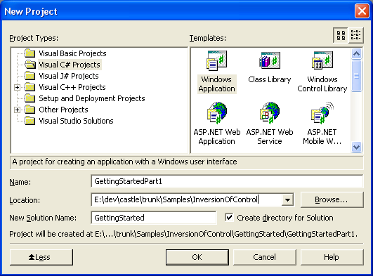

Part 1 - The basics
In this part of the Getting Started you will be introduced to the basic Windsor Container operations. You might be wondered: what about Castle MicroKernel? It is enough to say that when you are using the Windsor Container, you are, by consequence, using the MicroKernel as well.
We will use a Winforms project to experiment with the Windsor container. To set it up, follow the steps:
Open Visual Studio and go to New\Project... Select Windows Application

Now create a class named App. We will use it as the application entry point:
namespace GettingStartedPart1 { using System; using System.Windows.Forms; public class App { public static void Main() { Application.Run(new Form1()); } } }
-
Remove the entry point method from the Form1.cs generated for you by Visual Studio:
namespace GettingStartedPart1 { using System; using System.Windows.Forms; public class Form1 : System.Windows.Forms.Form { ... // [STAThread] // static void Main() // { // Application.Run(new Form1()); // } } }
You can also download the complete example:
GettingStartedPart1.zip (8.83k)
Proceed with Requirements.
Found an error? Something inaccurate?
Help us improve the documentation
Generated by Castle Anakia.
Generated by Castle Anakia.
Sponsored by  Castle Stronghold.
Castle Stronghold.